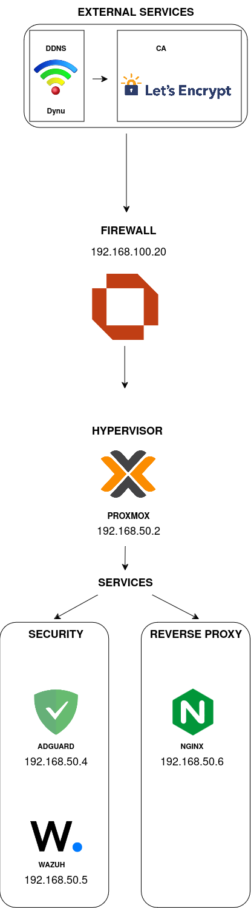

Welcome to my work-in-progress homelab, which I’ve been tinkering with for the past three weeks.
- OPNsense firewall, handling routing, NAT, and DHCP lease reservations for internal services
- Wazuh (SIEM/XDR) for monitoring and analyzing logs across the network
- Nginx as a reverse proxy to route HTTPS traffic to internal services and handle SSL termination
- AdGuard Home as a DNS sinkhole and for network-level ad/content blocking
- Dynu (Dynamic DNS) and Let’s Encrypt (Certificate Authority) for domain management and SSL provisioning
Progress was redone since I had to revise and remove Windows Server services. It's now more containerized, more "Linux-y".

This is the overview of the network topology. There are still plans I need to make it viable for blue team exercises.

Overview of the services topology. Since two of the services were done in Windows Server, I had to start over using this. Planning to add more in the future.
Things to do
- Setup Nginx to use the certificate from Certbot for HTTPS for services
- Setup Technitium as internal Authoritative server in case Dynu goes down
- Upstream AdGuard with OPNsense
- Reattach Wazuh agents on services
- Add a hub and connect it upstream to the firewall to allow my server and laptop to be in the same subnet
- Properly setup OPNsense
Future stuff to do
- Port forward via a reverse tunnel through WireGuard + OPNsense
- Run a Nextcloud service as an alternative for Google Drive
- Setup a NAS